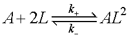
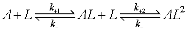
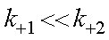
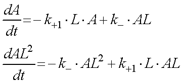
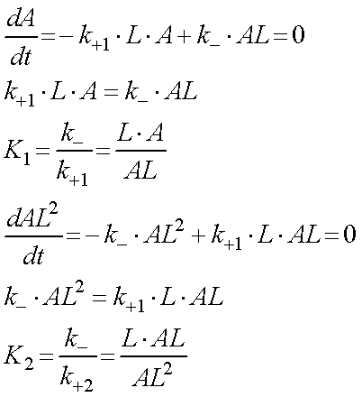
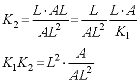

Hillの式-02
二つの基質が結合する場合，2倍ではなく2乗なのはなぜか？
アロステリックとは，基質が一つ結合すると，二つ目以降の基質が結合しやすくなることと考えると，その反応式は，

となります．しかし，ふと思ったのですが，なぜ，A（２L)ではないのだろう？と思い，検討し見ようと思いました．
上記の反応式は基質Lが二つ結合する反応スキームですが，厳密には，

となりますね，つまり途中のステップを省略しているわけです．
ここで，二つ目以降の基質が結合しやすくなるため，

と考えることにしましょう（逆反応をいじっても良さそうですが．．．）．
AとAL2の状態は，

となります．平衡状態においては，時間微分は０となるので，

と各平衡定数を計算することができます．
従って，AからAL2への平衡定数は，

となり，2倍ではなく，2乗となるわけです．